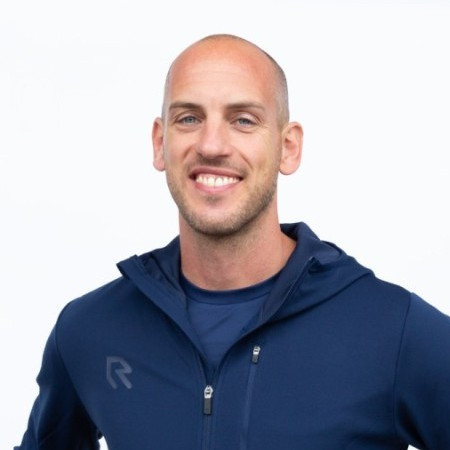
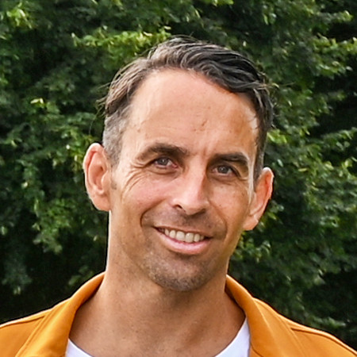
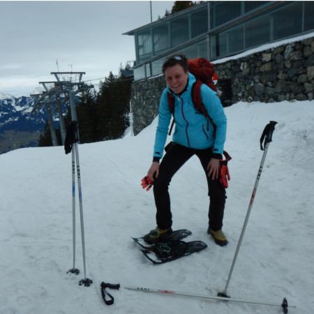
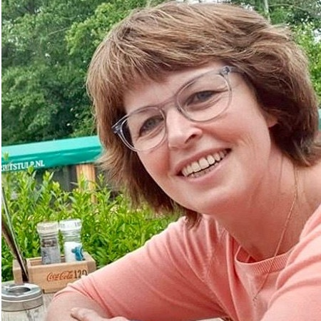
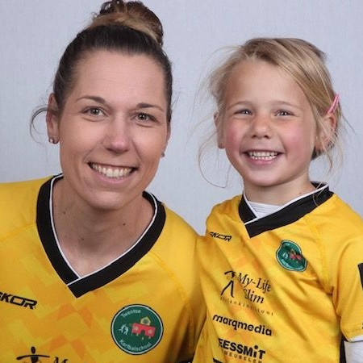

Andre Kuipers
-Kuipie-

-Kuipie-
Wie ben je?
Andre Kuipers, “Kuipie” voor de Dossers. Als ik een oude bekende tegenkom, altijd leuk om “Kuipie” te horen.
Waar woon je?
Ik woon in Dordrecht met Mabel, en onze 2 dochters Noortje en sinds een maand Cato.
In welke periode heb je gekorfbald bij DOS’46?
Als ik het goed zeg: Augustus 2000 - Juni 2011
Wat was de reden dat je bij DOS’46 ging korfballen? En waarom DOS’46?
Ik wilde alles uit mezelf halen, ging studeren in Zwolle en kwam al vaak in Nijeveen kijken. Was logische keuze. Hechte fanatieke club, vergelijkbaar met mijn club CSL waarvandaan ik kwam.
Waar denk je nog met een glimlach aan terug als je aan DOS’46 denkt?
Heb je even…
- Natuurlijk het groeien van een subtop team naar superteam. Mooiste wat er is om dit met een team door te maken. Dus niet het resultaat, maar juist de weg ernaartoe.
- Glimlach om elke wedstrijd weer binnen de lijnen te staan met zo’n geweldig ambiance en publiek.
- Kippenvelmomentjes na “ga staan als je voor dossie bent”
- De jaren als coach van de A2, werken naar het NK.
- De Korfbalschool, opgezet en die nu nog steeds loopt. Mooi om alle jeugd te zien groeien.
- De geweldige avonden in de kantine en daarna door naar herberg t plein.
- Mijn 2 broodjes halve bal na elke thuis wedstrijd die standaard klaar lagen
- De titels die mee naar Nijeveen mochten nemen in een karavaan met bussen onder politiebegeleiding.
- Mannen avond op de eerste vrijdagtraining van het seizoen met de buikschuivers.
Volg je DOS’46 nog altijd of ben je zijdelings nog betrokken bij de club?
Nee helaas niet betrokken, wel volg ik bijna alles, maar doordat ik na mijn periode bij DOS’46 gelijk door ben gegaan bij KZ en daarna coach geworden, ben ik eigenlijk nooit in de gelegenheid geweest om wedstrijden te kijken of langs te komen. Dat heb ik wel erg gemist. Dus alles via livestream. Zou het mooi vinden om nog eens iets te kunnen betekenen.
Casper Boom

Wie ben je?
Casper Boom
Waar woon je?
Amsterdam
In welke periode heb je gekorfbald bij DOS’46?
2000 t/m 2013, maar nog steeds lid.
Wat was de reden dat je bij DOS’46 ging korfballen? En waarom DOS’46?
Korfballen vond en vind ik nog steeds heel erg leuk om te doen. Op 6 jarige leeftijd begonnen met korfballen bij KV Juventa in Hardenberg, een club die ik ook nog steeds een warm hart toedraag. Fanatiek en ambitieus als ik was, vond ik het leuk om bij topkorfbal te gaan kijken en waar kan en kon dat nu beter en leuker dan in Nijeveen?Ik was al verkocht toen ik op een Hemelvaartstoernooi van Juventa aan het einde van de dag een DOS’46 shirtje kreeg en aan mij de mededeling werd gedaan: “Als je volgend jaar dit shirt meeneemt, mag je met ons meedoen!”
Dat was niet aan dovemansoren gericht en zo gebeurde het dat ik het jaar erna op 11 jarige leeftijd mijn “debuut” maakte voor DOS’46 in de junioren met o.a. Daniël Hulzebosch als vakgenoot. Ik droomde ervan om in de Eendracht te mogen spelen en toen ik door Nico Buiten in 2000 werd benaderd om voor DOS’46 te komen spelen, was de keuze heel gauw gemaakt! Eén van de betere, zo niet de beste beslissing van mijn leven.
Waar denk je nog met een glimlach aan terug als je aan DOS’46 denkt?
Uiteraard komen de kampioenschappen in Ahoy en de Europa Cups dan als eerste voorbij, maar dat is echt niet het enige. Er zijn zoveel mooie momenten geweest die ik koester. Waar het op neer komt is dat ik me vanaf minuut 1 thuis gevoeld heb bij DOS’46, me als een vis in het water voelde en daarnaast op hoog niveau mijn hobby kon uitoefenen. Wat mij betreft een perfecte combinatie, ik zou het zo weer over doen!
Volg je DOS’46 nog altijd of ben je zijdelings nog betrokken bij de club?
Zeker volg ik DOS’46 nog steeds, hoewel ik niet wekelijks in Nijeveen te vinden ben. Hou de verrichtingen van met name de selectie in de gaten en als het even kan, kom ik kijken. Met de openingsdag was ik er en het was weer als vanouds. Daarnaast zit ik nog in de reünie-commissie voor het 75 jarig jubileum, een taak die ik mooi vanuit Amsterdam kan doen.
DOS’46 zit nog immer in mijn hart en hoewel ik voor AKC Blauw-Wit speel, DOS’46 is mijn club! Onlangs was er 1 Blauw-Witter die kon juichen na de dubbele winst van de selectie van DOS’46 op AKC Blauw-Wit :).
Ik wens DOS’46 nog heel veel mooie jaren toe en hoop nog heel lang deel te mogen uitmaken van deze prachtige vereniging!
Jeanet Wanningen

Wie ben je?
Mijn naam is Jeanet Wanningen, geboren in Smilde, Drenthe, en nu al weer 20 jaar inwoner van Zwolle.
In welke periode heb je gekorfbald bij DOS’46?
Als kind ben ik begonnen met korfballen in Smilde bij Griffioen, en als junior overgestapt naar ASKO in Assen. In die tijd ging ik altijd met mijn ouders al regelmatig naar Nijeveen om te kijken, want als je topkorfbal wilde zien, moest je daar zijn!Op een avond ging in huize Wanningen de telefoon en was ik helemaal verbouwereerd dat de TC van DOS'46 belde met de vraag of ik interesse had om in Nijeveen te komen korfballen....uuuhh....jawel, maar... dan moet je toch best wat kunnen ???
Met de intentie om het natuurlijk te gaan proberen, maar met de gedachte dat ik altijd weer terug zou kunnen, heb ik in 1992 de overstap gewaagd. Na dat eerste jaar volgden er nog 13, en had ik toen niet kunnen bedenken dat ik nog steeds lid zou zijn van deze topclub. Niet allemaal meer als spelend lid, maar dat mag de pret niet drukken.
In mei 2006 behaalden we na jaren als stuntende suptopper, verloren kruisfinales en finale eindelijk de hoofdprijs: Nederlands Kampioen na 24 jaar en werd mijn afscheidsjaar er eentje van stoppen op je hoogtepunt !
Waar denk je nog met een glimlach aan terug als je aan DOS’46 denkt?
Natuurlijk de volle sporthallen bij thuiswedstrijden, de deuren die dicht moesten op last van de brandweer omdat het te vol was, maar ook het "hé Wannings". Zelfs nu nog kom ik mensen tegen die zeggen mij ergens van te kennen, en na een praatje blijkt dan Dos'46 de verbindende factor te zijn.
Volg je DOS’46 nog altijd of ben je zijdelings nog betrokken bij de club?
De veldcompetitie volg ik voornamelijk via de nieuwsberichten, maar de thuiswedstrijden in de zaal probeer ik toch wel zo veel mogelijk te bezoeken, de sfeer en de mensen zijn daar vertrouwd. En waar je mij natuurlijk ook al jaren kan vinden is de jaarlijkse Rommelmarkt; begonnen als verplichting als speler, maar al snel was ik er de hele dag te vinden. Na het stoppen als selectiespeler werd ik direct ingelijfd als commissie lid, en dat ben ik nog steeds, een ontzetten leuk jaarlijks evenement met een paar gezellige vergaderavonden!
Liena Pinkster

Wie ben je?
Liena (Hulzebosch) Pinkster met rugnummer 16. Opgegroeid in een (h)echte korfbalfamilie. Getrouwd met Roger en hij komt, hoe kan het anders, ook uit een korfbalfamilie. Onze kinderen, Iris en Luc, korfballen ook en hebben beide een relatie met een korfballer/korfbalster.
Zoals ik al schreef "korfbalfamilie". Korfbal hoorde bij ons dagelijks leven en zeker bij die van mij. Tot mijn 18e korfbalden mijn ouders, broer en ik bij K.V. Korulos in Scheemda. Ik had kennelijk best wel wat korfbaltalent want vanaf mijn 13e jaar werd ik elk jaar gekozen voor het noordelijk selectieteam en zelfs 1x geselecteerd voor het Nederlands juniorenteam. Ik heb na K.V. Korulos nog 2 jaar, samen met mijn broer, bij K.V. Ritola gekorfbald. Inmiddels had ik mijn studie afgerond en woonde en werkte in de stad Groningen. Het meest voor de hand liggend was dat ik ging korfballen bij N.I.C.. uit Groningen want ik woonde vlak bij het N.I.C. veld. Zij speelden net als Dos'46 op het hoogste niveau. N.I.C.. was niet de club waar ik wilde korfballen. Ik had Dos'46 meerdere keren zien spelen en hoopte dat ik ook zo goed zou worden dat ik in het eerste van Dos'46 kon korfballen.
Herman van Gunst was de hoofdtrainer bij Dos'46 en hij vroeg of ik bij Dos'46 wilde komen korfballen. Seizoen 1988/1989 heb ik de overstap naar Dos'46 gemaakt en ben nooit meer weggegaan. Ik ben in 1994 zelfs in Nijeveen gaan wonen.
Hoogte -en dieptepunten waren er ook. Ik ben positief ingesteld dus noem ik ze minder leuke gebeurtenissen. In het seizoen 1988/1989 speelden we op het veld nog in drie vakken. Dat jaar degradeerden wel op het veld. Ontzettend balen maar hoogtepunt was dat we het jaar erna kampioen werden. Feest dus ( en het waren leuke feestjes kan ik u / jullie vertellen).
Ik heb bijna 10 jaar in het eerste gespeeld. Tussendoor nog wel “even” bevallen van Iris en toen weer door.
Ik heb wel eens de vraag gekregen of ik het niet jammer vond dat ik nooit in “Ahoy” heb gestaan. Jammer? Nee, want voor mij waren de thuiswedstrijden echte hoogtepunten. Sporthal overvol met schreeuwende en zingende supporters. Deuren die open moesten omdat de vloer glad werd. Ook bij uitwedstrijden werden we gesteund door een vaste kern supporters. Dit heb ik altijd gewaardeerd. Jeugdspelers die tegen je opkeken en die later zelf in het eerste speelden. Waar ik weer voor klapte en ze aanmoedigde.
In de zaal werden we meestal 4 of 5. Toen bestonden er geen poules en geen kruisfinales. De nummer 1 en 2 speelden om de landstitel. We waren best goed maar kwamen net tekort.
Voor mij zijn de verloren finales ook hoogtepunten. Klinkt misschien raar maar nu ik erop terug kijk heb ik toch van die wedstrijden genoten. Voorbeelden hiervan zijn:
- Een beslissingswedstrijd tegen Blauw-wit (A).
- De veldfinale tegen Die Hage gespeeld in Arnhem. In dat jaar hadden we heel veel blessures en toch haalden we de veldfinale. De wedstrijd werd nog onderbroken vanwege hevige regenval, nou ja gewoon een wolkbreuk waarbij het veld een rivier was geworden. Uiteindelijk wel uitgespeeld maar helaas verloren.
- De Eindejaarstoernooi ( voorloper van de challenge) gewonnen in 2000.
SAMANTHA
SCHORN-JONKMAN

Wie ben je?
Ik ben Samantha Schorn-Jonkman woonachtig in Almelo, getrouwd met Erwin en we hebben 3 kinderen Luuk (14), Kay (10) en Jada (6).
In welke periode heb je gekorfbald bij DOS’46?
Ik heb 2x een periode bij DOS‘46 gekorfbald. De eerste keer was ik 19 en de tweede keer 33.
Na de eerste periode ben ik naar Dos Wk gegaan die toen ook op het hoogste niveau speelden, dat scheelde veel reistijd en heb er succesvolle jaren gehad.
Tot mijn 24ste op het hoogste niveau gespeeld en bij het nationale team en daarna de beslissing genomen om weer terug te gaan naar AKC en voor mijn maatschappelijk carrière te kiezen.
De tweede periode kwam doordat ik een keer bij dos was kijken in de zaal en met Daniël in gesprek kwam. Toen die tijd de Hoofdtrainer. Hij vroeg of ik nog ambitie had. En zo ja dat hij me erg graag bij wilde hebben! Ik was een maand of 8 daarvoor bevallen van de jongste maar speelde alweer bij AKC. Het heeft me aan het denken gezet, op je 33ste nog een keer acteren op het hoogste niveau met al die jonge atleten. Wie krijgt die kans nou nog?
Thuis natuurlijk over gesproken en Erwin zei toen ook tegen mij Sam deze kans krijg je nog 1x dus als je het wil doen! Dus toen de knoop doorgehakt en gegaan. Wat was het gaaf en ik had het nooit willen missen! Mooie groep, goeie balans tussen prestatie en gezelligheid. Al was ik stukken ouder (10-12 jaar) dan de meesten ‘oma’ (zoals velen me noemden) heeft genoten! Mooie periode!
Uiteindelijk kon ik het niet meer combineren het vroege tijdstip van trainen, in combi met mijn eigen bedrijf en het gezin. Ik heb toen voor mezelf gekozen. Dus met pijn in mijn hart alsnog, alweer maar nu definitief afscheid genomen van het korfballen op het hoogste niveau bij de allermooiste club. Want dat is DOS ‘46. Het voelt altijd als thuiskomen. Wat een warme hartelijke club! Ik kom er nog steeds graag om een wedstrijd te kijken en gezellig bij te kletsen met een ieder. Vriendschappen voor het leven gemaakt!
Henk Woudstra en Marijke Enzing

Wie zijn jullie?
Wij zijn Henk Woudstra en Marijke Enzing. tijdens onze korfbal carrière hebben we altijd samen gespeeld, dus ook bij DOS’46. waarmee we in 1982 landskampioen werden. We hebben twee kinderen, Nikki (33) en Joey (29), die er ook bij waren toen we met veel van de oud-ploeggenoten (inmiddels ook met kinderen) nog jarenlang kampeerden tijdens het Pinksterweekend.
Waar wonen jullie?
We zijn in 1976 getrouwd en sinds die tijd wonen we aan de Kerkstraat in Wolvega. We zijn beiden geboren en getogen Wolvegaasters.
In welke periode hebben jullie gekorfbald bij DOS’46?
We hebben bij DOS’46 gespeeld in de periode 1981-1984, totaal drie seizoenen. We kwamen toen van Wordt Kwiek Jubbega waar we vijf en zes jaar hadden gespeeld.
Wat was de reden dat jullie bij DOS’46 ging korfballen? En waarom DOS’46?
We (vooral Marijke) werd benaderd door Harry Dassen en Herman van Gunst of we bij DOS’46 wilden gaan spelen. We hebben toen met hem een gesprek gehad waarna we al snel besloten om ook nu samen weer een avontuur aan te gaan. DOS’46 speelde toen, zowel op het veld als in de zaal, op het hoogste niveau. We kenden als een vereniging met veel ambitie en een fantastische aanhang én het verhaal van Harry sprak ons aan.
Waar denken jullie nog met een glimlach aan terug als je aan DOS’46 denkt?
Het landkampioenschap was natuurlijk fantastisch, maar net zo bepalend voor die prachtige periode vonden we de sfeer rondom het team en de enorme betrokkenheid van het dorp en daarbuiten. We denken nog steeds met veel plezier aan iedereen terug en met een aantal hebben we nog steeds regelmatig contact. Soms komen we ook nog supporters uit die tijd tegen waarmee weer oude herinneringen worden opgehaald.
Volg je DOS’46 nog altijd of ben je zijdelings nog betrokken bij de club?
We volgen ze nu op afstand, maar we blijven wel altijd nieuwsgierig naar de uitslagen en prestaties.